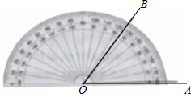
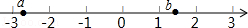
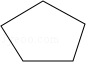
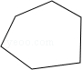
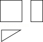

2016年北京市中考数学试题 · 选择题 第1、2、3、4、5题
1．（3分）（2016•北京）如图所示，用量角器度量∠AOB，可以读出∠AOB的度数为（ ）

A．45°B．55°C．125°D．135°
2．（3分）（2016•北京）神舟十号飞船是我国“神州”系列飞船之一，每小时飞行约28000公里，将28000用科学记数法表示应为（ ）
A．2.8×103B．28×103C．2.8×104D．0.28×105
3．（3分）（2016•北京）实数a，b在数轴上的对应点的位置如图所示，则正确的结论是（ ）

A．a＞﹣2B．a＜﹣3C．a＞﹣bD．a＜﹣b
4．（3分）（2016•北京）内角和为540°的多边形是（ ）
A．B．C．

D．
5．（3分）（2016•北京）如图是某个几何体的三视图，该几何体是（ ）

A．圆锥B．三棱锥C．圆柱D．三棱柱